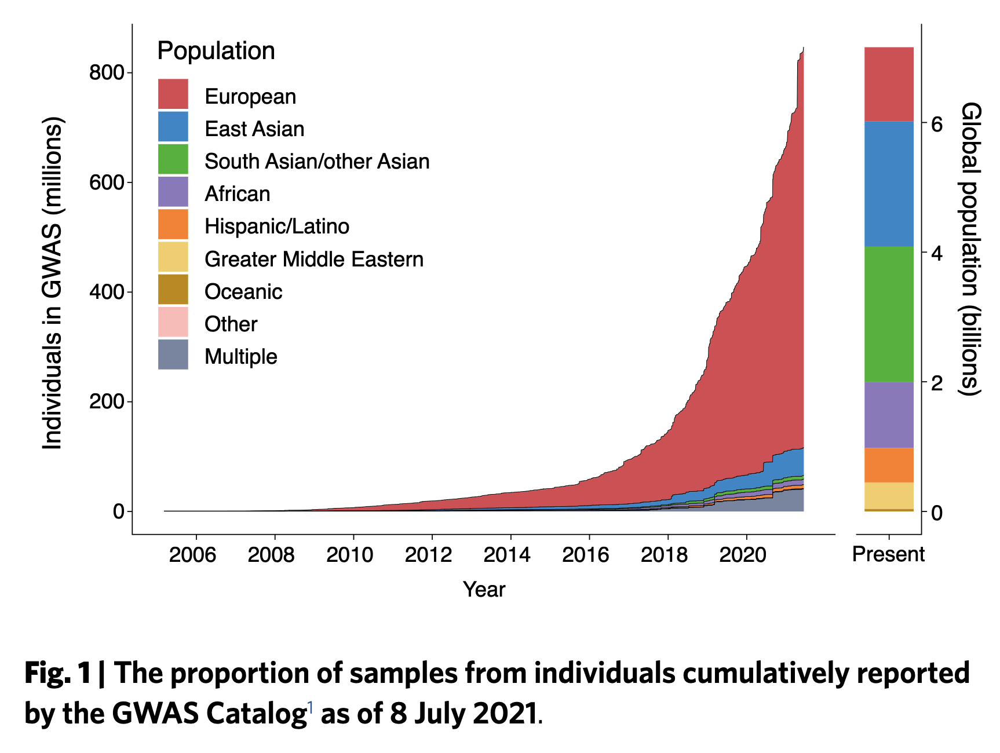
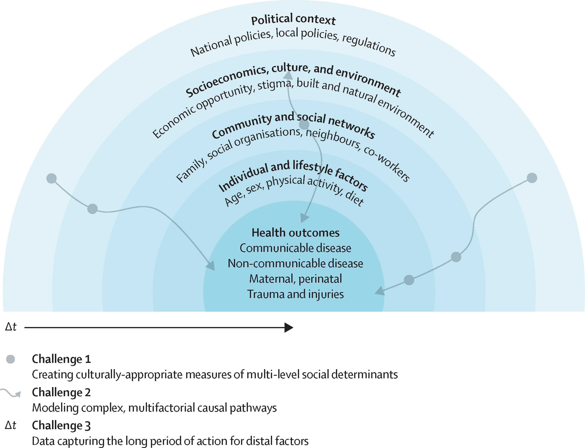
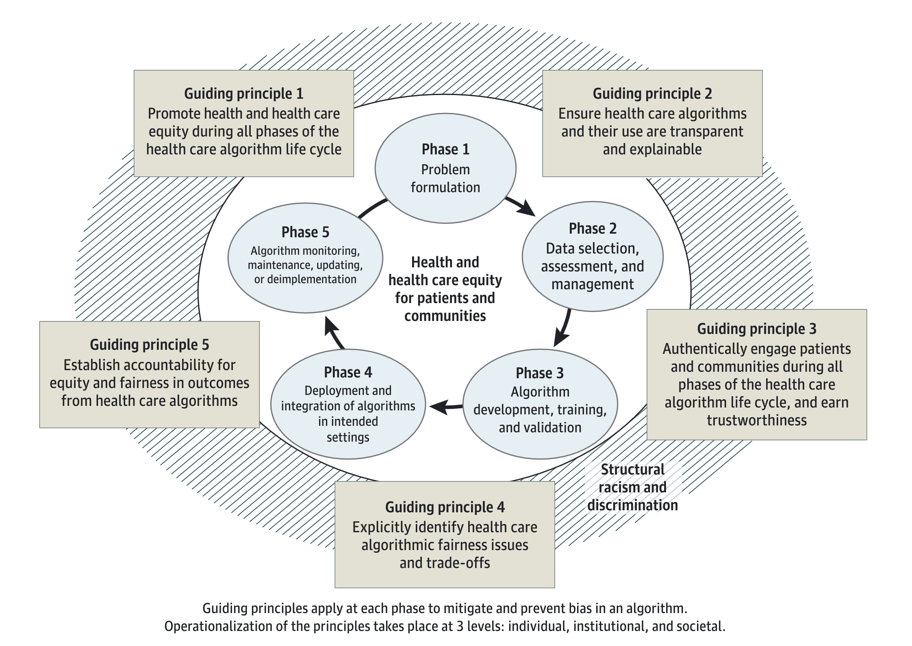
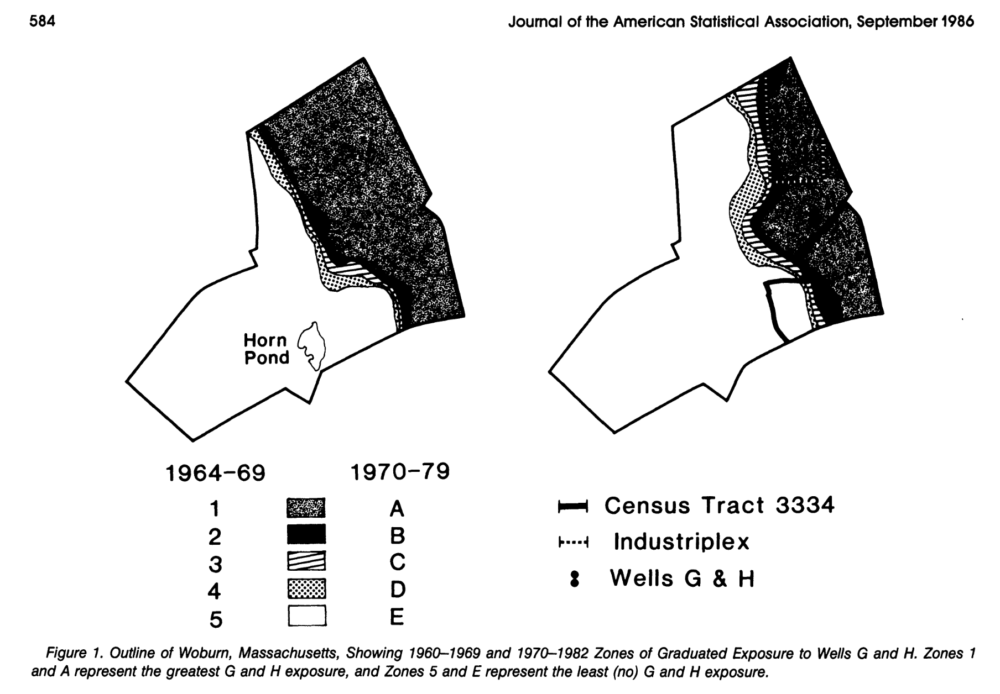
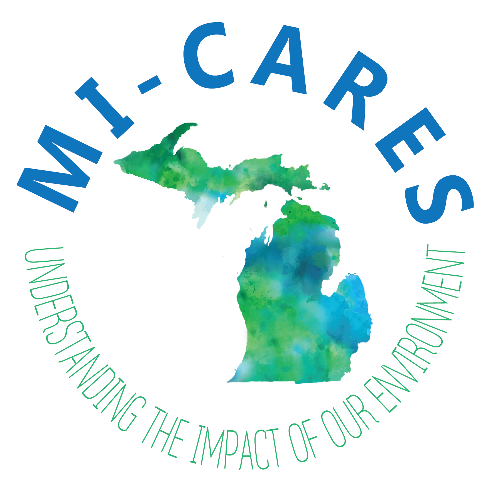
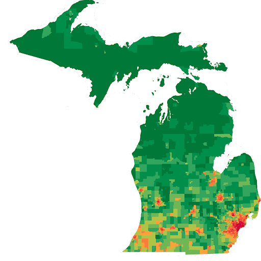
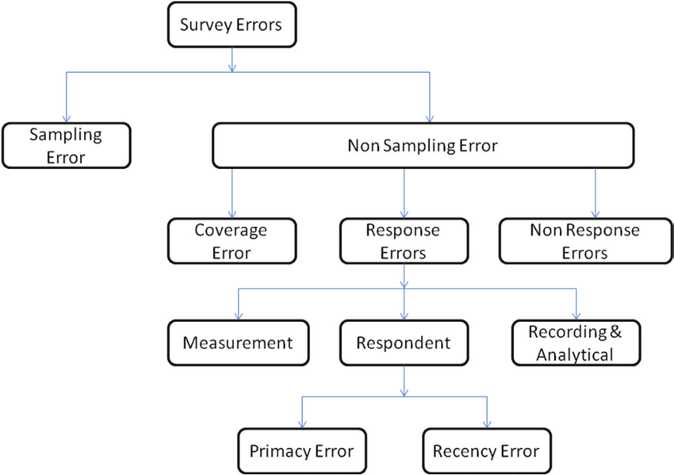

Bhramar Mukherjee’s Marvin Zelen Award Talk
This last Thursday (May 9th, 2024), Bhramar Mukherjee received the annual Marvin Zelen Award from the Harvard Biostatistics Department.
Sometimes a talk leaves you with enough food for thought that you simply have to write down the highlights somewhere you know you can come back to them, and Dr. Mukherjee’s certainly fits the bill.
Her talk was on Data Equity in Health Research.
On the nascency of the field:
She asks the question: when was the first textbook in statistics written, soliciting guesses from the audience. The answer is in Agresti, A. (2023). A historical overview of textbook presentations of statistical science. Scand J Statist, 50(4), 1641–1666. https://doi.org/10.1111/sjos.12641.
She also highlighted Janet Norwood several times throughout her talk, emphasizing the quote, “Women have to take advantage of the opportunities presented to them; it often isn’t quite as straight a career path as it is for men.”
The point, from how I understood it, is that our field of (bio-)statistics is still finding its way — and we all in it have an active role in shaping what that will be.
On Marvin Zelen and his legacy:
“What remains after papers and awards fade away are people and culture.”
She argues that though critical work was done by Marvin Zelen, the truly impactful legacy in is effect on the department — making it a welcoming place, intellectually curious, and emphasizing “statistical science” — that the field cannot be just methods, but must be grounded in science too.
On the racial/ethnic makeup of biobank/genetics study participants:
She showed this figure from Fatumo, S., Chikowore, T., Choudhury, A. et al. A roadmap to increase diversity in genomic studies. Nat Med 28, 243–250 (2022). https://doi.org/10.1038/s41591-021-01672-4

Driving home the point, she pointed out to us that her parents are Indian and hence in the barely represented South Asian portion of the above graph, and asked “When will my parents have access to precision medicine?”
On data inequities:
Citing LaVeist (2023), she points out the economic loss due to racial/ethnic disparities. Even if one sets aside the (paramount, crucial, necessary) moral arguments about health justice, there is an undeniable economic toll attributable due to preventable disparities in marginalized vs. privileged groups.
LaVeist TA, Pérez-Stable EJ, Richard P, et al. The Economic Burden of Racial, Ethnic, and Educational Health Inequities in the US. JAMA. 2023;329(19):1682–1692. doi:10.1001/jama.2023.5965
Chunara, R., Gjonaj, J., Immaculate, E., Wanga, I., Alaro, J., Scott-Sheldon, L. A. J., et al. (2024). Social determinants of health: The need for data science methods and capacity. Volume 6, Issue 4, e235-e237. https://doi.org/10.1016/S2589-7500(24)00022-0
This motivates her work in thinking about how to fully capture the myriad causes that actually drive health in her research.

She described the ‘vicious cycle’ that health-affecting algorithms can enter, where existing disparities and systemic discrimination bias training datasets, biasing algorithms, affecting real-life access to resources, intervention, and disadvantaging already disadvantaged communities, leading to a perpetuation of the cycle.

Marshall H. Chin, et al. Guiding Principles to Address the Impact of Algorithm Bias on Racial and Ethnic Disparities in Health and Health Care. JAMA Network Open. 2023;6(12):e2345050. doi:10.1001/jamanetworkopen.2023.45050
These data inequities, distinct from and also deeply intrinsically tied to health inequities, are part of what Dr. Mukherjee calls “The Data Struggle of the Unseen” [1, 2]
To the end of upending these vicious cycles, she cites the work on guidelines for mitigating risk in health-system algorithms: Collins, G. S., Dhiman, P., Andaur Navarro, C. L., Ma, J., Hooft, L., Reitsma, J. B., Logullo, P., Beam, A. L., Peng, L., Van Calster, B., van Smeden, M., Riley, R. D., & Moons, K. G. (2021). Protocol for development of a reporting guideline (TRIPOD-AI) and risk of bias tool (PROBAST-AI) for diagnostic and prognostic prediction model studies based on artificial intelligence. BMJ open, 11(7), e048008. https://doi.org/10.1136/bmjopen-2020-048008
On the work of Marvin Zelen and Stephen Lagakos, and their legacy in community-engaged work:
In the late 70s and 80s, Marvin Zelen, Stephen Lagakos and others led a series of analyses on the effects of contaminated well-water in Woburn, MA.
Known as the Harvard Health Study, the investigation showed, for the first time, a connection between Woburn’s contaminated water and a variety of adverse health effects, including leukemia. The matter made headlines, wound up in court, and was chronicled in the book A Civil Action, which was later made into a movie. As the book notes, when Prof. Zelen announced the study’s results in the basement of a Woburn church in February 1984, someone in the audience called out, “Thank God for Marvin Zelen,” and the crowd burst into applause.

See https://sphweb.bumc.bu.edu/otlt/mph-modules/woburnleukemia/Lagakos_et_al_Woburn.pdf for a copy of one of the original papers.
Coincidentally, in 2023 the EPA just proposed a ban on one of the chemicals identified in the Lagakos et al study
Mukherjee relates Zelen and Lagakos’ community-engaged work to her own fieldwork-focused projects in India related to maternal-health. When confronted by her academic advisor who said something along the lines that “this isn’t biostatistics!” She says she said back, “Well, sorry, but you have tenured me.”
She seemed to admonish some tenured faculty, saying “why do you play it so safe?” Why don’t you take a risk?
Later during the talk, she said that there is a common refrain “Statistician’s play in everyone’s backyard, but I am not happy with just a backyard. I want a front-yard, a garden, a forest.” Meaning, it’s easy for statisticians to lament the quality of the data they’re given, but she sees this as an impetus to get involved and improve study-design and data-collection from its conception.
On the effects of doing data-equity focused work on her career:
Driven by a lack of quality reporting on COVID-19 in India, Mukherjee and colleagues did quite a lot of early and sustained writing about the pandemic.
She recalled a story of meeting a couple in an airport in India who recognized her and said that they based their decision on when to move their parents from one city to another based on her work. This, for her, was a clear and powerful example of how she was making a real difference in peoples’ lives.
However, she also received death-threats due to her work. When talking with her father about it, he said to her “You received a death threat, but you seem happy about it (?)” To that, she said she was because “I at least have done something as a statistician to be kill-worthy.”
On getting involved with study-design and rollout as a statistician:
Mukherjee argues it’s simply not enough for (bio-)statisticians to wish that the data quality were better, more representative, that it captured marginalized groups with higher coverage, but necessary that (bio-)staticicians get involved and design their own studies in collaboration with epidemiologists and other subject matter experts.
To that end, Mukherjee describes her involvement with MyDataHelps, an online mobile-phone centric platform that makes it possible so that participants can contribute their data without having to do long surveys all at once. She emphasized that they can just push one or two questions at a time. On traditional biostatistics, she said that this is why the foundations of our field in sampling design are so crucial: because now, as we adapt what it means to collect data in the 21st century, we have to update our notions of how survey data should be collected and analyzed.


She also described her involvement in MI-CARES, a huge grant focused on over-sampling racial/ethnic minority populations in Michigan, and to be ‘the one study that does it all’ in terms of capturing cardio-metabolomics, epigenomics, environmental justice, residential measures, discrimination, etc., etc., etc., so that we can truly have one dataset where all of the complexities of health are measured longitudinally (over-time) for a cohort of people who are not traditionally well-represented in science, public health, and medicine.
She said of her engagement with fieldwork based science: “That year, if I publish less papers, I don’t care, because I am going to go for glorious failure.” As in, she would rather go for glorious failure attempting to do community-engaged work than traditional success in biostatistics publishing yet another methods paper that only gets cited by subsequent methods papers.
On Imperfect Data:
She referenced Xiaoli Meng’s 2018 article Statistical Paradises and Paradoxes in Big Data: Law of Large Populations, Big Data Paradox, and the 2016 US Presidential Election, which highlighted the “Curse of Large N.”
She points out that it doesn’t do much good to shrink the variance of an estimator as \(N \to \infty\) if the fundamental estimate is biased, because now we are simply becoming “precisely wrong.”
Mukherjee argues that (bio-)statisticians are uniquely poised among the data-analytic disciplines (computer science, mathematics, bioinformatics, data science, machine learning) to address issues like selection bias, aggregation bias, measurement error, survivorship bias, etc., because we are intimately connected with epidemiology and concerned with the data-generating mechanisms that lead to missingness, drop-out, self-selection, loss-to-follow-up, etc., whereas many other disciplines take the data “as given.”

My Synthesis:
In my opinion, few words can do justice to how inspiring it was to hear from a leader in the field who so unequivocably advocates for the field’s focus on community-engaged work, a social determinants of health -centric vision of health systems, a mission to reverse the vicious cycles of algorithmic bias and discrimination, and who speaks truth to power, asking why tenured faculty are so reluctant to try something new in deviating away from their methodological work to focus on projects with more concrete real-world impact.
Mukherjee was clear: the methodological work has its place, and largely seemed to emphasize that without an early career in methods-focused projects (bringing with them motivation to develop theory underlying the methods), her recent work that is in relation to communities would not have been the same — it would not have been informed by the same methodological considerations, or by her accumulated wealth of knowledge about, say, survey design and methods to account for complex missingness patterns and/or bias-introducing-mechanisms.
At once highlighting the merits and shortcomings of the field, Mukherjee leaves us with significant food for thought: it is simply not enough for biostatisticians who aspire to be ‘data dreamsers’ to live in an ivory tower focused solely on theoretical considerations when there is so much to contribute to work on-the-ground that reshapes people’s lives for the better. As she reminded me at the event’s reception, for Zelen and Lagakos to present their findings in a church’s basement in Woburn was to truly engage with the public, and to hear someone cry out “Thank God for Marvin Zelen” speaks volumes to the impact our field can have if we center the lived experiences of the communities we want to uplift.